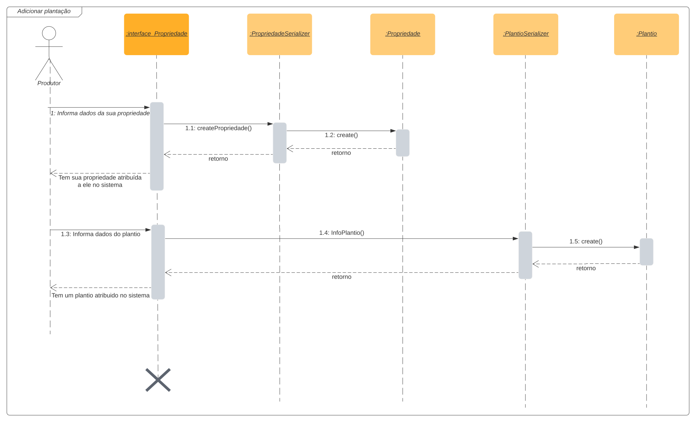
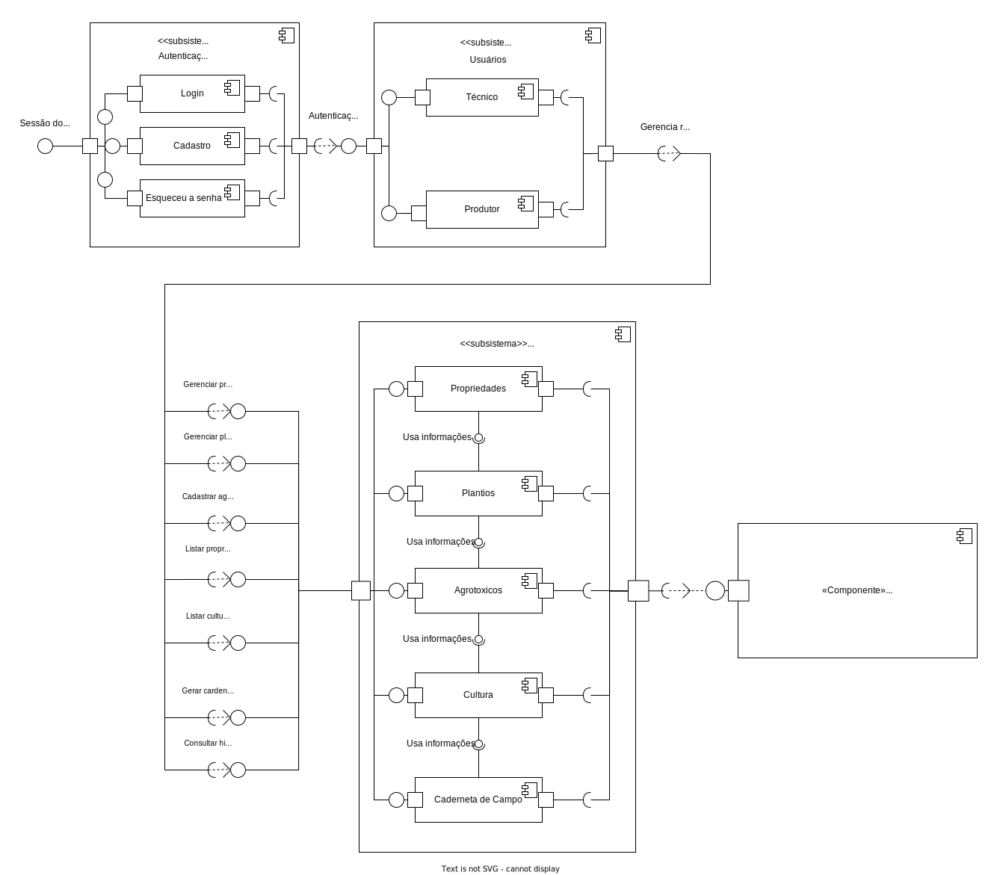

Documento de Arquitetura de Software
1. Versionamento
| Versão | Data | Descrição | Autor(es) |
|---|---|---|---|
| 1.0 | 22/03/2022 | Abertura do documento | Vitor Lamego e João Moura |
| 1.1 | 22/03/2022 | Adição da Visão Lógica | Vitor Lamego |
| 1.2 | 22/03/2022 | Adição do tópico de Qualidade | João Moura |
| 1.3 | 23/03/2022 | Adição do tópico de Metas e Restrições Arquiteturais | Brenno |
| 1.4 | 25/03/2022 | Adição do tópico de Visão de Implementação | Eduardo Afonso |
| 1.5 | 25/03/2022 | Adição do tópico de Visão de Implantação | Rafael Ramos |
| 1.6 | 26/03/2022 | Adição do tópico de Visão de Dados | Thiago |
| 1.7 | 26/03/2022 | Adição do tópico de Introdução e Tamanho e Performance | Carlos |
| 1.7 | 26/03/2022 | Adição do tópico de Representação Arquitetural | Paulo |
| 1.8 | 27/03/2022 | Adição do tópico de Visão de Casos de Uso | Denniel William |
| 1.9 | 29/03/2022 | Adição do tópico de Visão de processos | Victor Lima |
| 2.0 | 29/03/2022 | Revisão do documento | Todo o grupo |
2. Introdução
2.1 Objetivo
Este documento fornece uma visão abrangente da arquitetura do sistema, usando diferentes visões arquiteturais para descrever diferentes aspectos do sistema [8]. Destina-se a capturar e transmitir os fragmentos e decisões arquiteturais significativas que foram feitas no projeto Caderneta de Campo Digital.
2.2 Escopo
Partindo do conjunto de visões definidas pelo RUP [1] além da visão de dados, este documento permite expor as principais decisões arquiteturais tomadas na construção e implementação do sistema.
Por isso apresenta significativos casos de uso, elementos de design, estrutura dos processos do sistema, elementos persistentes e importantes do modelo de dados e as principais dimensões de qualidade do sistema.
2.3 Definições, Acrônimos e Abreviações
Termos, acrônimos e abreviações foram identificados e detalhados na tabela abaixo, junto de sua descrição.
| Termo | Descrição |
|---|---|
| RUP | Rational Unified Process |
| iOS | Sistema operacional móvel da Apple Inc. |
| ORM | Mapeamento objeto-relacional |
| API | Interface de programação de aplicações |
| DRF | Django REST Framework |
| GoF | Gang of Four |
| GRASP | General responsibility assignment software patterns |
2.4 Visão Geral
Seguindo o template criado para uso com o RUP, temos os seguintes tópicos:
- Introdução: Promove uma visão geral do Documento de Arquitetura de Software.
- Representação Arquitetural: Descreve qual é a arquitetura de software para o sistema atual e como ela é representada.
- Metas e Restrições Arquiteturais: Esta seção descreve os requisitos e objetivos de software que têm algum impacto significativo na arquitetura.
- Visão de Casos de Uso: Lista os casos de uso ou cenários que representam alguma funcionalidade central significativa no sistema final.
- Visão Lógica: Descreve as partes arquitetonicamente significativas do modelo de design.
- Visão de Processos: Descreve os principais modos de comunicação entre processos.
- Visão de Implantação: Descreve as configurações do sistema para disponibilização de uso.
- Visão da Implementação: Descreve a decomposição do software em camadas e subsistemas no modelo de implementação.
- Visão de Dados: Descreve a perspectiva de armazenamento de dados persistente do sistema.
- Tamanho e Performance: Descreve as características de dimensionamento do software que impactam a arquitetura.
- Qualidade: Descreve como a arquitetura contribui para os quesitos de: extensibilidade, confiabilidade, portabilidade e etc.
- Referências: Lista todas os documentos que foram usados como referência.
3. Representação Arquitetural
3.1 Frontend

Figura 1: Imagem Flutter
Fonte: Flutter.
Flutter é um framework open source, desenvolvido pelo google para aplicações multiplataformas: mobile, desktop e web; permitindo a criação de aplicações nativas a partir de um único código base. A linguagem base do Flutter é o Dart, uma linguagem também criada pelo Google que se assemelha bastante ao JavaScript [2].
A equipe optou pela escolha do flutter por diversos motivos, o principal deles foi que grande parte dos membros ja tiveram um contato prévio com a tecnologia, além do que, as 3 principais características em que o flutter é baseado (produtivo, rápido e flexivel) já são motivos suficientes para considerar como um forte candidato. Bom salientar que diversas empresas têm investido na ferramenta, desta forma, provocando um grande crescimento no mercado.
3.2 Backend

Figura 2: Imagem Django
Fonte: Django.
Django REST Framework ou DRF é um kit de ferramentas poderoso e flexível para construir APIs da Web, que permite sua construção em qualquer plataforma, seja Windows, macOS ou Linux. É um framework muito utilizado por toda a comunidade, pois fornece uma maneira rápida e simples de criar APIs utilizando as facilidades que o Django oferece, como o sistema de rotas e seu ORM para manipulação de banco de dados [3].
A escolha dessa tecnologia também foi com base na experiência prévia de alguns integrantes da equipe, que estavam dispostos a realizar treinamentos e fornecer ajuda aos demais membros. Sem falar das vantagens que a ferramenta traz, como possibilitar um rápido desenvolvimento e possuir uma excelente documentação.
3.3 Banco de dados

Figura 3: Imagem PostgreSql
Fonte: PostgreSql.
PostgreSQL é um sistema gerenciador de banco de dados objeto-relacional em que cada coisa criada é tratada como um objeto, além de ser 100% comunitário mesmo tendo grandes empresas por trás [4]. Segundo o site StackOverlfow [5], é um dos bancos de dados mais populares da atualidade, tendo como um dos seus pontos principais a adequação em padrões de conformidade, ajudando a construir bancos de dados otimizados. No nosso projeto será utilizado para armazenar os dados provenientes da API.
4. Metas e Restrições Arquiteturais
4.1 Metas
- O aplicativo deve ser de fácil utilização
- O aplicativo deve garantir a rastreabilidade dos plantios
- O aplicativo deve desempenhar suas funções de forma eficiente
4.2 Restrições
- O sistema deve permitir o uso apenas de pessoas já cadastradas pelo Instituto de Assistência Técnica e Extensão Rural(EMATER)
- A aplicação deverá ser disponibilizada por meio um aplicativo
- É necessário possuir um smartphone para acessar a aplicação
- É preciso ter uma conexão com a internet para utilizar a aplicação
- Deve ser desenvolvida em Python(Django) e Dart(Flutter)
5. Visão de Casos de Uso
Seguindo um nível maior de abstração em comparação a outros tópicos tratados no documento, a visão de casos de uso visa auxiliar no entendimento das interações dos atores com o sistema de forma a descrever os cenários de uso da aplicação. Este tópico irá tratar dos casos de uso mais significativos levantados no documento de caso de uso dando uma breve descrição sobre cada caso.
5.1 Descrição dos casos de uso
-
UC02 - Cadastrar: Este caso de uso é o ponto inicial do projeto sendo que nessa etapa o usuário irá optar pelo registro como produtor ou técnico dentro da aplicação, ficando assim restrito as funcionalidades de cada tipo de usuário.
-
UC04 - Visualizar propriedade: Este caso de uso se refere ao técnico visualizar a propriedade no qual faz a supervisão, e também ao produtor visualizar apenas sua própria propriedade.
-
UC05 - Gerar caderneta de campo: Este caso de uso se trata do foco do projeto e é exclusiva do produtor , sendo ele capaz de gerar uma caderneta de campo com as informações sobre a propriedade, como plantio e talhões a fim de gerar uma rastreabilidade.
-
UC14 - Visualizar plantações colhidas: Este caso de uso é exclusivo do produtor e consiste em visualizar as plantações colhidas em uma propriedade com o objetivo de ter controle sobre as plantações feitas em cada talhão dentro dessa propriedade.
-
UC17 - Registrar aplicação de agrotóxico: Este caso de uso é exclusivo do produtor e consiste no produtor registrar uma aplicação de agrotóxico em cima de uma plantação, com o objetivo de registrar quando foi feita essa aplicação.
-
UC19 - Marcar uma plantação como colhida: Este caso de uso é exclusivo do produtor e consiste no produtor marcar que uma plantação foi colhida em um talhão. Nesse caso essa marcação servirá para atualizar o histórico sobre um talhão de plantações feitas sobre ele.
-
UC21 - Visualizar caderneta de campo: Este caso de uso é exclusivo do técnico e consiste no técnico visualizar a caderneta de campo gerada pelo produtor sobre a propriedade supervisionada. Seu objetivo é conectar a interação do produtor e técnico sobre a caderneta de campo digital, assim que ela for gerada, será disponibilizada para o técnico.
-
UC22 - Solicitar alteração na caderneta de campo: Este caso de uso é exclusivo do técnico e consiste no técnico conseguir reportar divergências na caderneta de campo, seu objetivo é manter o padrão atualmente orientado pelos técnicos de forma a manter a documentação da caderneta de campo regularizada.
-
UC23 - Desassociar uma propriedade: Este caso de uso é exclusivo do técnico e consiste no técnico se desassociar da propriedade, sendo assim, o técnico não será mais o supervisor dessa propriedade. Este caso auxilia na rotatividade de técnicos com a propriedade.
-
UC24 - Se associar a uma propriedade: Este caso de uso é exclusivo do técnico e consiste no técnico se associar a uma propriedade, sendo assim, o técnico será o supervisor de uma propriedade associada. Este caso e o caso no tópico anterior se complementam colaborando para a rotatividade de técnicos de uma propriedade.
-
UC25 - Informar o período de carência: Este caso de uso é exclusivo do técnico e consiste em informar o produtor sobre o período de carência sobre o agrotóxico utilizado na plantação, ele tem como objetivo a comunicação e regularização das regras sanitárias sobre uma plantação.
-
UC26 - Cadastrar agrotóxico: Este caso de uso é exclusivo do técnico e consiste em cadastrar um agrotóxico no sistema visando auxiliar ao produtor quando for registrada uma aplicação de agrotóxico sobre uma plantação através de informações pré-definidas e com ilustrações do agrotóxico.
6. Visão Lógica
6.1 Visão Geral
As visões de uma determinada arquitetura são abstrações dos modelos já criados para o projeto. Na ocasião da visão lógica, o objetivo é decompor os subsistemas e seus respectivos pacotes, apresentando as suas principais características, a fim de melhorar a qualidade de qualquer documento de modelagem já elaborado. O objetivo não é entrar em muitos detalhes por ser responsabilidade da própria modelagem.
Sendo assim, para a discussão da visão lógica serão utilizadas algumas imagens referentes à modelagem de pacotes elaborada pelo grupo. Além disso, as visões serão separadas para o Back-end e para o Mobile, uma vez que possuem estruturas diferentes
6.2 Diagrama de Pacotes Mobile

Figura 4: Diagrama de pacotes mobile
Fonte: Autor
A parte do Mobile é responsável pelo contato direto com o usuário do aplicativo, onde a partir das interfaces o usuário consegue se comunicar com o sistema desenvolvido. Entrando na explicação a nível lógico dos pacotes do mobile, podemos perceber que existe uma pasta do projeto, que na ocasião está nomeada como Flutter. A partir disso, existe um primeiro nível de profundidade que possui os seguintes pacotes: Android, iOS, assets e lib.
Os pacotes: Android e iOS são responsáveis por armazenar configurações e detalhes específicos de cada sistema operacional, onde as informações de build e qualquer necessidade de utilização de recursos nativos são tratados. O pacote assets é responsável por armazenar os recursos externos do projeto, que pela imagem podemos perceber que esses recursos são imagens e fontes para o projeto, sendo armazenados em seus respectivos pacotes. Por fim temos o pacote lib que é responsável por armazenar todo o código fonte desenvolvido para o projeto.
No pacote lib existem vários outros pacotes que se relacionam e que serão explicados a seguir: como pacote central temos a pasta pages que é responsável por armazenar as interfaces do aplicativo, além disso essa pasta se relaciona com várias outras, a partir dela o pacote components é importado, já que é responsável por armazenar componentes globais, ou até mesmo locais, do projeto. Portanto, as pages acabam utilizando esses components que são criados ao longo do projeto.
Além disso, se relaciona com o pacote de controllers que ficam responsáveis pela estruturação e manipulação de dados que vêm do servidor e que são obtidos diretamente do pacote de services, que é responsável por fazer efetivamente as requisições e aguardar as respostas obtidas. Por sua vez, o pacote de services e de controller acabam utilizando o pacote de models para que os dados vindos do servidor sejam transformados no modelo que a aplicação mobile necessita. Por fim, existe o pacote globals que acaba sendo utilizado por todos os outros pacotes e que é responsável por armazenar informações, variáveis, objetos que precisam ser acessados globalmente de qualquer parte do projeto.
6.3 Diagrama de Pacotes Backend

Figura 5: Diagrama de pacotes backend
Fonte: Autor
Para a arquitetura do Back-End, temos um pacote Settings que é responsável pelas configurações locais de ambiente e configurações globais do projeto. Além disso, existe uma relação com a base de dados do projeto que na ocasião o banco utilizado foi o PostgreSQL, por fim, nesse primeiro nível, existe um pacote para cada módulo desenvolvido, que na imagem está descrito como Modulo N. A seguir será detalhado como funciona a estrutura de pacotes de cada módulo, que acaba concentrando as principais funcionalidades do back.
Pode-se perceber que o pacote centralizado nessa estrutura acaba sendo o pacote view que fica responsável justamente pelas views dos módulos que utilizam o pacote de urls, responsável por detalhar os endpoints daquele determinado módulo, para realizar a comunicação com o Mobile. O pacote de views também acessa o pacote de models para que as informações do banco sejam organizadas de forma que o servidor desenvolvido consiga utilizar, criando então os modelos para esses dados recebidos.
Quando existe qualquer mudança em algum modelo dos dados do banco, o pacote migrations fica responsável por implementar essas alterações. Além disso, qualquer manipulação dos dados de algum modelo do projeto é feita dentro do pacote de managers, portanto acaba sendo utilizado pelo pacote de models. Voltando para a centralização do pacote views, ele também acessa o pacote de serializers que possui como finalidade a serialização e deserialização dos objetos JSON que são enviados entre o back e o Mobile. O último relacionamento é com o pacote filters que armazena filtros de querysets utilizados.
Por fim, existem três pacotes que não possuem relação direta com o pacote de view, mas que são fundamentais para o bom funcionamento do servidor, sendo eles: pacote tests que possui os testes do módulo em específico, o pacote tasks que são tarefas que executadas de forma assíncrona a partir de um Observer (Padrão GoF Comportamental) e por último o pacote admin que são arquivos que armazenam configurações das páginas referentes ao objeto na página do administrador.
7. Visão de Processos
7.1 Visão Geral
A visão de processos tem como objetivo fornecer uma base para compreensão da organização dos processos dentro do sistema desenvolvido e a vizualização de como esses grupos de processos interagem. De forma intuitiva fica claro por quais processos o sistema deverá passar para que uma atividade seja realizada [9].
Durante a etapa de modelagem dinâmica foram criados os diagramas de sequência que são utilizados para ilustrar os processos existentes no nosso projeto
7.2 Cadastro de usuário

Figura 6: Diagrama de cadastro de usuário
Fonte: Autores
7.3 Adicionar plantação

Figura 7: Diagrama de adição de plantação
Fonte: Autores
7.4 Aplicar agrotóxico

Figura 8: Diagrama de aplicação de agrotóxico
Fonte: Autores
7.5 Atribuir técnico à propriedade

Figura 9: Diagrama de atribuição de técnico à propriedade
Fonte: Autores
8. Visão de Implantação
8.1 Visão Geral
A visão de implantação objetiva a representação física tanto a nível dos processos e/ou dos componentes, é estabelecida uma configuração física do sistema a partir dos nós representados nos diagramas [1]. O diagrama abaixo busca essa representação física da implantação de uma maneira um pouco generalista, porém com os processos e componentes necessários para tal implantação.
8.2 Diagrama de Implantação
Figura 10: Diagrama de implantação
Fonte: Autor
9. Visão da Implementação
9.1 Visão Geral
Esta visão tem como objetivo apresentar as decisões arquiteturais feitas pela equipe para realizar a implementação do produto, tais como os sistemas e subsistemas da implementação com suas dependências.
A equipe ao longo do projeto confeccionou o diagrama de componentes que retrata esse escopo de sistemas e subsistemas, além disso, diagramas que também foram confeccionados e trazem uma ideia melhor das camadas das implementações, tanto do back-end como do front-end são os diagramas de pacotes.
9.2 Diagrama de Componentes

Figura 11: Diagrama de pacotes componentes
Fonte: Autor
9.3 Diagrama de Pacotes Backend
Figura 12: Diagrama de pacotes backend
Fonte: Autor
9.4 Diagrama de Pacotes Frontend
Figura 13: Diagrama de pacotes frontend
Fonte: Autor
10. Visão de Dados
10.1 Visão Geral
A Visão de Dados trata dos dados que são salvos e que podem ser recuperados quando necessário no futuro, ou seja, daqueles dados que precisam ser persistidos pela aplicação em um Bancos de Dados Relacional. Vale ressaltar que essa parte é muito importante, uma vez que a sua modelagem impacta diretamente na implementação do projeto.
A modelagem de dados na Caderneta de Campo Digital teve como objetivo garantir que as entidades e seus relacionamentos conseguissem atender todas as necessidades especificadas no Product Backlog, garantindo a proteção dos dados, a alta coesão e tornar o bancos de dados mais flexível, eliminando a redundância e dependência inconsistente.
Dessa forma, a equipe começou a modelagem de uma forma mais abstrata pelo Modelo Entidade-Relacionamento (MER) que permitiu, de forma simples e eficiente, a identificação e modelagem das entidades, dos atributos e de seus relacionamentos. Posteriormente, as entidades, os atributos e seus relacionamentos foram representados em forma gráfica no Diagrama Entidade-Relacionamento (DER), como mostra a Figura 14.
Figura 14: Diagrama Entidade-Relacionamento
Fonte: Autores
Por conseguinte, no Diagrama Lógico de Dados (DLD), a modelagem se aproximou da representação física em um banco de dados, onde o tipo dos atributos foi definido e os relacionamentos convertidos em tabelas ou campos de chave estrangeira. Por fim, todas as entidades, seus atributos e seus relacionamentos foram documentados no Dicionário de Dados.
11. Tamanho e Performance
Tendo em vista o tamanho descrito nos repositórios de backend e frontend, o sistema como um todo conta com menos de 500 megabytes de tamanho.
Para a execução da aplicação, se tratando de aplicativo móvel, é necessário um smartphone com sistema operacional Android ou iOS com acesso à internet. Por ter como o objetivo a conexão de vários agricultores e técnicos é possível seu uso simultâneo com várias pessoas.
12. Qualidade
Por fim, o último tópico que será abordado nesse documento de Arquitetura de Software, é sobre os quesitos de qualidade da aplicação. Para tanto, serão utilizadas as visões tanto do usuário final como dos programadores sobre o produto desenvolvido, avaliando alguns pontos essenciais destacados pelo modelo de qualidade proposto por McCall's [6]. Esse modelo, define diversos fatores de qualidades e seus critérios de qualidades, que serão utilizados para classificar e demonstrar os principais pontos de qualidade da Caderneta de Campo Digital.
Além disso, é importante ressaltar que para atingir os objetivos de qualidade de código, foram seguidos diversos padrões definidos ao longo dos tópicos de Padrões de Projeto. Vários critérios de qualidade, como: consistência, tolerância a erros, eficiência de execução e de armazenamento, modularidade, entre outros, foram capazes de serem alcançados graças à utilização dos diversos GRASP(s), sendo eles: o Polimorfismo, a Coesão, o Acoplamento e os Controladores.
| Fatores de Qualidade | Aplicação no Programa |
|---|---|
| Eficiência | A API e o Frontend, para alcançarem essa meta, utilizaram os padrões GoF's de Método de Fábrica, State, Decorator e outros identificados nos documentos de aplicação. |
| Usabilidade | Como forma de alcançar a usabilidade, a equipe desenvolveu uma arquitetura simples e eficiente com a prototipação, de forma a definir um modelo usável para o usuário, conforme métricas definidas no documento de Especificação Suplementar e na Modelagem NFR |
| Confiabilidade | Para atingir a confiabilidade, também descrita na Especificação Suplementar, foi necessário a modelagem de um banco de dados que atendesse as necessidades expostas por esse fator de qualidade. Com isso, tanto o backend quanto o frontend conseguem cumprir com as metas de confiabilidade esperadas para a aplicação. |
| Testabilidade | A testabilidade também foi um princípio definido e utilizado desde o início das implementações do backend e do frontend. Isso, principalmente na visão do backend, se deve ao formato escolhido para o desenvolvimento da aplicação, o Test Driven Development (TDD) [7]. |
| Manutenabilidade | Em relação a meta de manutenabilidade, a equipe buscou criar uma arquitetura que utiliza de frameworks conhecidos e com grande suporte da comunidade. Dessa forma, esse fator de qualidade é facilmente atingido permitindo a equipe manter o software por muito tempo. Além disso, é importante ressaltar que essa meta facilitou as pesquisas sobre os padrões de projeto que podem ser utilizados no projeto. |
| Portabilidade | Por fim, a meta de portabilidade foi destacada principalmente pelas vantagens provindas dos Padrões de Projetos utilizados, que auxiliam diretamente essa meta. Outro ponto muito importante, é que a API foi desenvolvida para poder ser utilizada independente do Frontend feito para o projeto. |
13. Referências
[1] SERRANO, Milene. Arquitetura e Desenho de Software. AULA - ARQUITETURA & DAS – PARTE II. Acesso em: 26 mar. 2022.
[2] Flutter Documentação Flutter. Disponivel em https://flutter.dev/ Acesso em 25 de mar. de 2022
[3] Django Rest Framework Documentação Django Rest Framework. Disponivel em https://www.django-rest-framework.org/ Acesso em 25 de mar. de 2022
[4] O que é PostgreSQL. Disponivel em https://4linux.com.br/o-que-e-postgresql/ Acesso em 29 de mar. de 2022
[5] Developer Survey. Disponivel em https://insights.stackoverflow.com/survey/2021#section-most-popular-technologies-databases Acesso em 29 de mar. de 2022
[6] SINGH, Jagannath - User's Perspective of Software Quality. 2018.
[7] DevMedia, Test Driven Development: TDD Simples e Prático. Disponível em: https://www.devmedia.com.br/test-driven-development-tdd-simples-e-pratico/18533. Acesso em: 22 de mar. de 2022.
[8] Diretriz: Documento de Arquitetura de Software. Disponível em: https://www.cin.ufpe.br/~gta/rup-vc/core.base_rup/guidances/guidelines/software_architecture_document_F4C93435.html.Acesso em: 22 de mar. de 2022.
[9] Conceito: Visão de Processos. Disponivel em https://www.cin.ufpe.br/~gta/rup-vc/core.base_rup/guidances/concepts/process_view_E3DD0B09.html Acesso em 29 de mar. de 2022